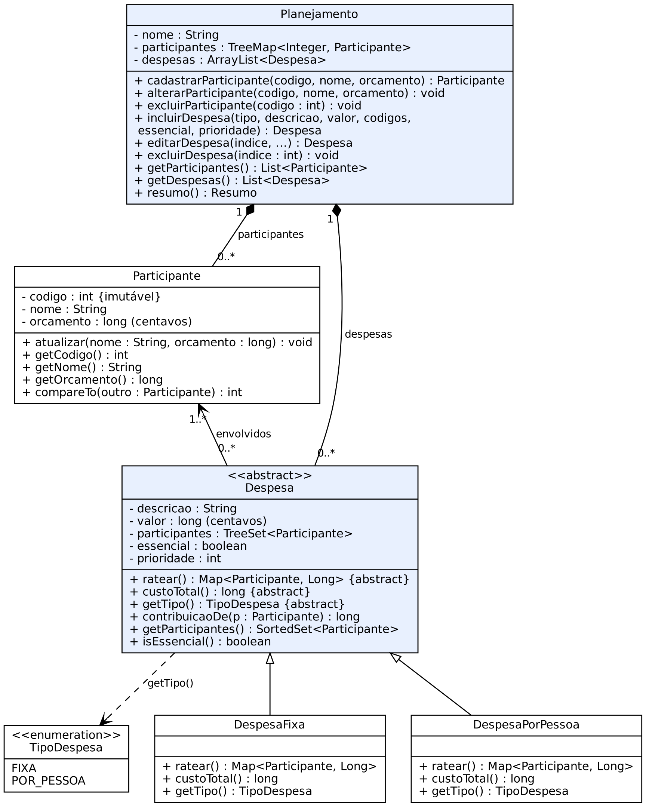
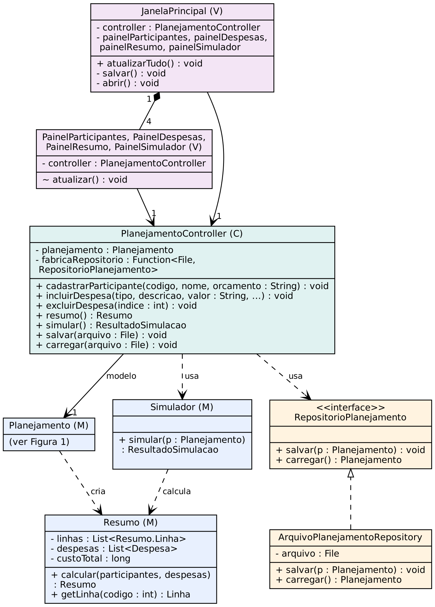
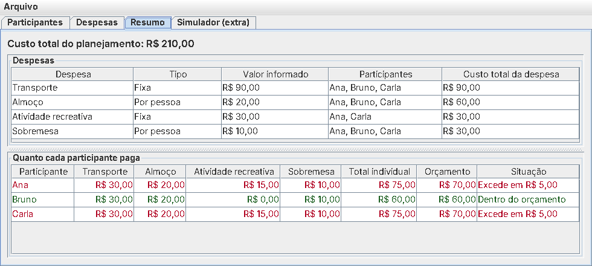
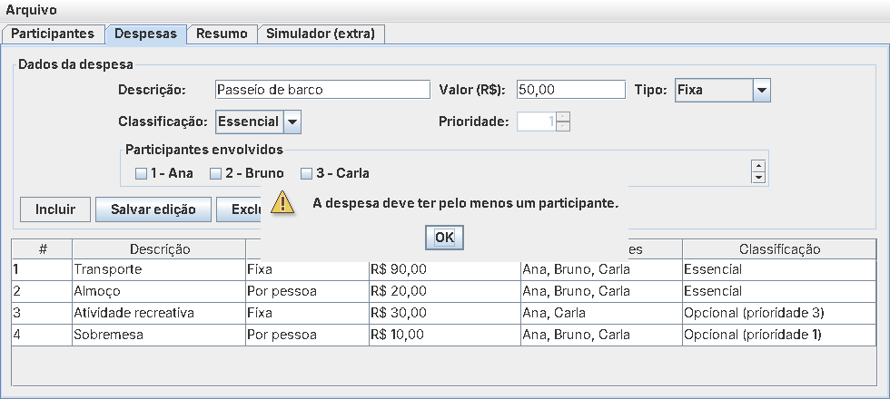
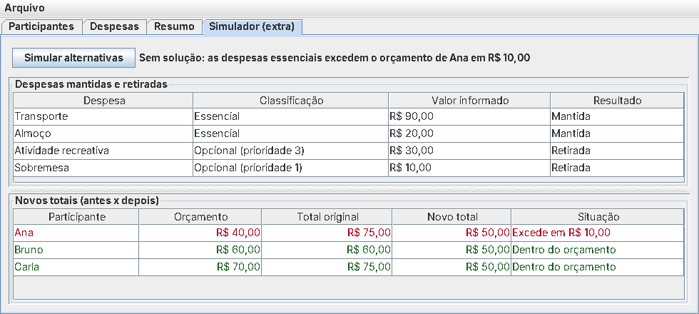
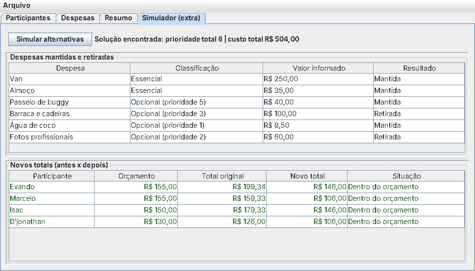

Relatório técnico da atividade final de Programação Orientada a Objetos
| Integrantes | Matrícula |
|---|---|
| Marcelo de Oliveira Saraiva | 2641741 |
| [NOME COMPLETO DO INTEGRANTE 2] | [0000000] |
| [NOME COMPLETO DO INTEGRANTE 3] | [0000000] |
| [NOME COMPLETO DO INTEGRANTE 4] | [0000000] |
Objetivo. Desenvolver e validar uma aplicação Java com interface Swing que planeja despesas de uma atividade em grupo: cadastra participantes e despesas fixas ou por pessoa, rateia os custos em centavos exatos, informa o total de cada participante e se ele respeita o orçamento, salva e recupera o planejamento em arquivo e, como extensão, sugere quais despesas opcionais manter para que todos fiquem dentro do orçamento.
Palavras-chave: programação orientada a objetos; Java; Swing; MVC; serialização.
Ao organizar um passeio, um grupo costuma dividir os gastos de maneira improvisada e só percebe no fim que alguém gastou mais do que podia. Algumas despesas são divididas entre todos, outras envolvem só parte do grupo; um transporte tem valor fixo, uma refeição é cobrada por pessoa. O Cabe no bolso representa essas diferenças, recalcula tudo a cada alteração e mostra, para cada participante, se o total cabe no orçamento e quanto excede.
O público são grupos de amigos ou colegas que planejam uma atividade com orçamentos individuais limitados e precisam de uma ferramenta simples, sem instalação nem conexão. O escopo é um planejamento por vez, em reais, com divisão igualitária entre os selecionados; ficam fora pagamentos, divisão percentual e uso multiusuário. Além do caso de referência do enunciado (Ana, Bruno e Carla), a equipe criou o cenário fictício “Dia de praia” (quatro participantes, seis despesas) para exercitar centavos, participação seletiva e o simulador.
A Figura 1 mostra o modelo. Planejamento é a raiz: possui os participantes (em um
TreeMap indexado pelo código) e as despesas (em um ArrayList) e concentra as operações
de cadastro, consulta e atualização. Despesa é abstrata e tem duas subclasses,
DespesaFixa e DespesaPorPessoa, que sobrescrevem ratear() e
custoTotal(). A notação segue Fowler (2005).
Relações. Planejamento compõe (losango cheio) participantes e despesas, pois ambos só
existem dentro de um planejamento e deixam de existir com ele. Despesa se associa a 1..*
Participante e guarda referências para os mesmos objetos do planejamento, não cópias; assim,
alterar nome ou orçamento de alguém se reflete em todas as despesas e o resumo é recalculado sem sincronização
manual. A navegação é unidirecional, o que explica a regra que impede excluir um participante com despesa vinculada.
Encapsulamento. Todos os atributos são privados. Despesa é imutável: “editar”
uma despesa cria uma nova, validada, que só então substitui a antiga; assim uma edição inválida nunca deixa o
estado pela metade. Os construtores validam e getParticipantes() devolve visão não modificável. Herança e polimorfismo. Resumo.calcular
percorre uma List<Despesa> e chama contribuicaoDe() e custoTotal()
sem conhecer o tipo concreto; o tipo só é escolhido na fábrica Planejamento.criarDespesa. A
Tabela 1 resume as responsabilidades.
| Classe (pacote) | Responsabilidade |
|---|---|
Planejamento (model) | Raiz do modelo; cadastra, altera e exclui participantes e despesas; valida antes de alterar. |
Participante (model) | Código imutável e único, nome e orçamento em centavos; valida os próprios dados. |
Despesa, DespesaFixa, DespesaPorPessoa (model) | Descrição, valor, participantes e classificação; cada subclasse implementa o rateio. |
Resumo (model) | Calcula custo total, total individual, excesso e situação; nunca é guardado. |
Simulador (model) | Objetivo extra: escolhe as opcionais a manter sem alterar o original. |
PlanejamentoController (controller) | Converte textos em tipos do modelo, encaminha a ação e repassa as exceções à visão. |
JanelaPrincipal e painéis (view) | Swing: recebem entradas e mostram resultados e mensagens; não calculam. |
RepositorioPlanejamento / ArquivoPlanejamentoRepository (persistence) | Contrato de salvar/carregar e implementação por serialização em arquivo. |

O código está em pacotes model, view, controller,
persistence e util (Figura 2). Exemplo de fluxo, “Incluir despesa”: o
ActionListener do botão em PainelDespesas lê os campos como texto e chama o controlador;
este converte o valor com Dinheiro.parse e chama Planejamento.incluirDespesa; o modelo
valida e cria a despesa. Em caso de sucesso, a visão chama atualizarTudo() e cada aba relê os dados
do controlador. Em caso de falha, o modelo lança RegraNegocioException com mensagem pronta para o
usuário, a visão a exibe em caixa de diálogo e nada foi alterado. O controlador conhece apenas a interface
RepositorioPlanejamento (recebe uma fábrica), então a persistência pode ser trocada sem mexer no
restante.

A interface tem quatro abas: Participantes (cadastrar, alterar nome e orçamento, excluir),
Despesas (incluir, editar e excluir, escolhendo tipo e participantes), Resumo (despesas, custo total,
total individual e situação) e Simulador; o menu Arquivo salva, abre e inicia planejamentos.
O layout usa BorderLayout, GridBagLayout e FlowLayout e as ações são
tratadas por listeners (DEITEL; DEITEL, 2017; ORACLE, [s.d.]a).
Centavos. Todo valor é um long em centavos, sem double (BLOCH, 2018). No
rateio fixo, cada selecionado paga valor / n e os valor % n centavos restantes vão, um
a cada pessoa, aos primeiros selecionados em ordem crescente de código (o TreeSet já itera nessa
ordem). Na despesa por pessoa, cada selecionado paga o valor unitário e o custo da despesa é unitário × número de
selecionados. O total individual soma as contribuições (zero se não participa); está dentro do orçamento se
total ≤ orçamento, e o excesso é total − orçamento. Validações. São recusados, com mensagem e sem
alterar o estado: campos vazios, código duplicado, não numérico ou não positivo, nome vazio, orçamento negativo,
valor ≤ 0 ou com mais de duas casas, despesa sem participantes, participante inexistente ou repetido,
índice de despesa inexistente e exclusão de participante com despesa vinculada. O campo de valor aceita
70, 70,5, 70.50 e R$ 1.234,56.
| Coleção | Por que foi escolhida |
|---|---|
TreeMap<Integer, Participante> em Planejamento | Código único garantido pela chave; busca em O(log n); iteração em ordem de código. |
ArrayList<Despesa> em Planejamento | Mantém a ordem de inclusão e permite editar e excluir por posição na tabela. |
TreeSet<Participante> em Despesa | Impede repetição e itera em ordem crescente de código, necessária para distribuir os centavos. |
TreeMap<Participante, Long> (rateio) | Resultado do rateio já ordenado por código. |
HashSet<Integer> (validação) | Detecta código repetido na seleção em tempo constante. |
As classes de dados (Planejamento, Participante, Despesa e subclasses)
implementam Serializable com serialVersionUID (BLOCH, 2018; ORACLE, [s.d.]b). Todo o
grafo é gravado em um único ObjectOutputStream; por isso as referências compartilhadas são
preservadas na leitura (a despesa aponta para o mesmo objeto Participante da lista) e nada é
duplicado. A gravação usa arquivo temporário e Files.move, de modo que uma falha não destrói o
arquivo anterior, e os fluxos são fechados com try-with-resources. Ao carregar, o planejamento em uso só é
substituído depois da leitura completa: arquivo ausente, inválido, vazio ou corrompido gera mensagem e preserva o
planejamento atual. Resumo e simulação não são persistidos, e sim recalculados.
Cada despesa é essencial ou opcional (com prioridade inteira positiva). O algoritmo mantém todas as
essenciais e testa por busca exaustiva os 2k subconjuntos das k opcionais (k ≤ 10, no
máximo 1.024 combinações): para cada um soma, por participante, essenciais mais opcionais escolhidas; o
subconjunto é viável se ninguém ultrapassa o orçamento (igual ao limite é aceito) e vence o de maior soma de
prioridades (o primeiro encontrado em caso de empate). Antes disso verifica se as essenciais sozinhas já estouram
algum orçamento; se sim, informa o excesso de cada participante e a ausência de solução. A complexidade é
O(2k·k·n) e o planejamento original nunca é alterado, pois o resultado é um novo Resumo.
Os testes são automatizados (TestesRunner, sem dependências) e gravam entrada, resultado
esperado, resultado obtido e situação em docs/evidencias-testes.md; a execução inteira tem 43
verificações e todas foram aprovadas. A reprodução é ./scripts/testes.sh, descrita no README. As
capturas vêm da interface real (./scripts/capturas.sh). Os identificadores En abaixo são os
números das linhas do arquivo de evidências.
Com os dados da seção 4 do enunciado, os valores obtidos são exatamente os esperados (Tabela 3 e Figura 3): custo total de R$ 210,00; Ana e Carla excedem o orçamento em R$ 5,00 cada; Bruno fica dentro, com total igual ao orçamento. Não houve divergência em relação ao enunciado (evidências E1 a E3).
| Pessoa | Transporte | Almoço | Atividade | Sobremesa | Total | Orçamento | Situação |
|---|---|---|---|---|---|---|---|
| Ana | 30,00 | 20,00 | 15,00 | 10,00 | 75,00 | 70,00 | Excede em 5,00 |
| Bruno | 30,00 | 20,00 | 0,00 | 10,00 | 60,00 | 60,00 | Dentro do orçamento |
| Carla | 30,00 | 20,00 | 15,00 | 10,00 | 75,00 | 70,00 | Excede em 5,00 |

| Cenário | Entrada | Esperado | Obtido | Evid. |
|---|---|---|---|---|
| Centavos no rateio | Despesa fixa de R$ 100,00 para os códigos 1, 2 e 3 (informados fora de ordem) | R$ 33,34, R$ 33,33 e R$ 33,33; soma R$ 100,00 | R$ 33,34, R$ 33,33 e R$ 33,33; soma R$ 100,00. Com R$ 10,01 entre os códigos 2 e 3: R$ 5,01 e R$ 5,00 | E4, E5 OK |
| Entrada ou vínculo inválido | 15 tentativas: despesa sem participantes, valor negativo, zero, vazio, não numérico ou com 3 casas, descrição vazia, código inexistente ou repetido; participante com código duplicado, nome ou orçamento vazio, orçamento negativo, código não numérico ou vazio | Todas recusadas com mensagem; dados e totais inalterados | 15 de 15 recusadas; estado completo e totais idênticos aos de antes; mensagem exibida: “A despesa deve ter pelo menos um participante.” (Figura 4) | E6 a E8 OK |
| Alteração de orçamento | Orçamento de Ana de R$ 70,00 para R$ 80,00 | Custo de Ana segue R$ 75,00, agora dentro do limite | Total R$ 75,00; dentro do orçamento; excesso R$ 0,00. Nome alterado aparece nas despesas | E9, E10 OK |
| Exclusão de despesa | Excluir “Atividade recreativa” do caso original | R$ 60,00 por pessoa; total R$ 180,00 | Ana, Bruno e Carla R$ 60,00 cada; custo total R$ 180,00 | E11 OK |
| Salvar e reiniciar | Salvar o caso, iniciar controlador novo e carregar (duas vezes) | Todos os dados, vínculos e resultados, sem duplicar | 3 participantes, 4 despesas, mesmos totais; mesmo objeto Participante na lista e na despesa; estado idêntico | E12 a E15 OK |
| Problema no arquivo | Arquivo ausente; texto qualquer; arquivo vazio; salvar em pasta inexistente; novo planejamento | Mensagem clara; planejamento em uso preservado; permite iniciar vazio | Mensagem em todos os casos; estado idêntico após as falhas; planejamento vazio com 0 participantes, 0 despesas e custo R$ 0,00 | E16 a E21 OK |
| Regras de vínculo e edição | Excluir Bruno com despesas; editar a atividade para “por pessoa” de R$ 30,00; edição inválida | Exclusão impedida; totais recalculados; despesa intacta na edição inválida | Exclusão impedida; R$ 90,00 para cada um, total R$ 270,00; estado idêntico; soma dos totais individuais = custo total | E22 a E26 OK |
70, 70,5, R$ 1.234,56 etc.) também foram verificados (E27).
No caso de referência, o simulador retira a sobremesa e mantém a atividade (prioridade 3): Ana e Carla pagam R$ 65,00 e Bruno R$ 50,00, total R$ 180,00, todos dentro do orçamento. Com o orçamento de Ana em R$ 40,00 não há solução, pois as essenciais custam R$ 50,00 (Figura 5). No cenário “Dia de praia” (Tabela 5), van e almoço são essenciais e custam R$ 97,50 por pessoa; a melhor combinação é buggy mais água de coco (prioridade 6), que vence barraca mais fotos (prioridade 5), embora as duas combinações caibam nos orçamentos.
| Participante | Orçamento | Total original | Situação original | Total após simular | Situação após simular |
|---|---|---|---|---|---|
| Evando | 155,00 | 199,34 | Excede em 44,34 | 146,00 | Dentro |
| Marcelo | 155,00 | 159,33 | Excede em 4,33 | 106,00 | Dentro |
| Isac | 150,00 | 179,33 | Excede em 29,33 | 146,00 | Dentro |
| D'jonathan | 130,00 | 126,00 | Dentro | 106,00 | Dentro |
| Cenário | Resultado obtido (igual ao esperado) | Evid. |
|---|---|---|
| Caso de referência | Retira sobremesa; R$ 65,00 / 50,00 / 65,00; total R$ 180,00; prioridade 3; original preservado (4 despesas, mesmos totais) | E28 a E30 |
| Ana com R$ 40,00 (sem solução) | Sem solução; Ana excede em R$ 10,00 | E31 |
| Equipe: melhor combinação | Buggy + água de coco; prioridade 6; confere com busca recursiva independente; original preservado | E36 a E38 |
| Equipe: limite exato (Isac R$ 146,00) | Total igual ao orçamento é aceito; prioridade segue 6 | E39 |
| Equipe: um centavo abaixo (Isac R$ 145,99) | Combinação muda; prioridade 5, igual à busca independente; todos dentro | E40 |
| Equipe: D'jonathan com R$ 90,00 | Sem solução; D'jonathan excede em R$ 7,50 (essenciais custam R$ 97,50) | E41 |
| Cenário extra com 4 opcionais de prioridades diferentes | Prioridade 13, igual à busca independente | E32 |
data/ também carregam e reproduzem os totais (E42, E43).

Decisões de POO. A classe abstrata Despesa concentra o que é comum (validação, participantes,
classificação) e deixa para as subclasses apenas o que varia, o rateio; novos tipos de despesa exigem apenas
uma nova subclasse e uma opção na fábrica. A imutabilidade de Despesa e a validação antes de
qualquer mudança simplificaram a consistência. A interface de persistência desacopla o controlador do formato de
arquivo, e o resumo sempre recalculado evita totais desatualizados.
Dificuldades e correções. (1) Com seis despesas, os cabeçalhos da tabela de resumo apareciam cortados
(“Passeio d…”); as colunas passaram a se ajustar ao conteúdo, com rolagem horizontal quando
não cabem. (2) Na validação do teste de edição, o resultado esperado estava digitado errado (R$ 255,00); a
conferência manual (três pessoas × R$ 30,00 mais as demais despesas) confirmou que o programa estava correto
(R$ 270,00) e o teste foi corrigido, o que reforça que cada valor esperado precisa ser calculado independentemente
do código. (3) A serialização amarra o arquivo à versão das classes; por isso há serialVersionUID e um
gerador dos arquivos de exemplo. (4) Um texto como 1.234 é ambíguo (milhar ou decimal); o programa o
trata como decimal e recusa com mensagem clara por ter três casas.
Comparação com o caso de referência e aprendizado. Todos os valores da seção 4 coincidiram, sem divergência. Validar o cenário próprio mostrou que o simulador pode preferir uma combinação que parece menos atraente (buggy mais água de coco, prioridade 6, contra barraca mais fotos, prioridade 5), e que um único centavo no orçamento (R$ 145,99 em vez de R$ 146,00) muda a resposta, o que justifica tratar “igual ao limite” como dentro do orçamento e testar as duas bordas.
Limitações e melhorias. Há um planejamento por vez, sem desfazer e refazer, com divisão sempre igualitária e uma só moeda; o arquivo é binário, ilegível por humanos e dependente das classes; o simulador aceita até dez opcionais; não há testes automatizados da interface além das capturas. Melhorias mais úteis ao público: exportar o resumo (CSV ou PDF) para enviar ao grupo, salvar em formato textual (JSON), usar JUnit, dividir por pesos ou percentuais e sugerir ajustes de valores além de retirar despesas.
Uso de ferramentas de IA. O código-base e parte da documentação foram produzidos com apoio de IA generativa (ANTHROPIC, 2026). [A equipe deve revisar e reescrever este parágrafo com a verdade do grupo: o que cada integrante revisou, executou e compreendeu, e quais decisões de modelagem e análise foram da equipe. A atividade exige que a equipe assuma a condução do projeto.]
| Integrante | Implementação | Integração | Validação | Documentação |
|---|---|---|---|---|
| [Nome 1] | [preencher] | [preencher] | [preencher] | [preencher] |
| [Nome 2] | [preencher] | [preencher] | [preencher] | [preencher] |
| [Nome 3] | [preencher] | [preencher] | [preencher] | [preencher] |
| [Nome 4] | [preencher] | [preencher] | [preencher] | [preencher] |
ANTHROPIC. Claude Code: software de codificação assistida por IA. 2026. Disponível em: https://claude.com/claude-code. Acesso em: 23 nov. 2026.
ASSOCIAÇÃO BRASILEIRA DE NORMAS TÉCNICAS. NBR 6023: informação e documentação: referências: elaboração. Rio de Janeiro: ABNT, 2018.
ASSOCIAÇÃO BRASILEIRA DE NORMAS TÉCNICAS. NBR 10520: informação e documentação: citações em documentos: apresentação. Rio de Janeiro: ABNT, 2023.
BLOCH, Joshua. Effective Java. 3. ed. Boston: Addison-Wesley, 2018.
DEITEL, Paul; DEITEL, Harvey. Java: como programar. 10. ed. São Paulo: Pearson, 2017.
FOWLER, Martin. UML essencial: um breve guia para a linguagem-padrão de modelagem de objetos. 3. ed. Porto Alegre: Bookman, 2005.
ORACLE. The Java Tutorials: creating a GUI with Swing. [S. l.]: Oracle, [s.d.]a. Disponível em: https://docs.oracle.com/javase/tutorial/uiswing/. Acesso em: 23 nov. 2026.
ORACLE. Java Object Serialization Specification: Java SE 11. [S. l.]: Oracle, [s.d.]b. Disponível em: https://docs.oracle.com/en/java/javase/11/docs/specs/serialization. Acesso em: 23 nov. 2026.
[INSTITUIÇÃO]. Atividade final de Programação Orientada a Objetos: Cabe no bolso: planejador de despesas compartilhadas. 2026. Proposta de atividade.